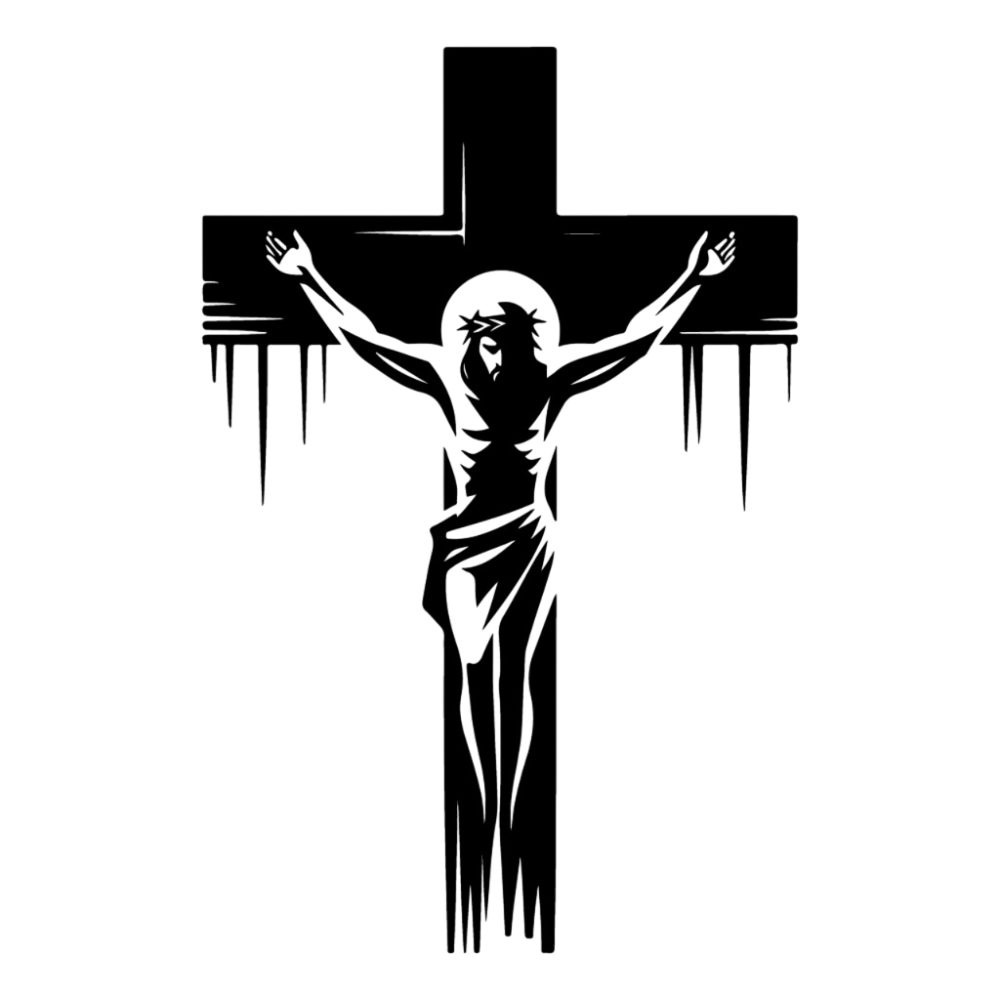
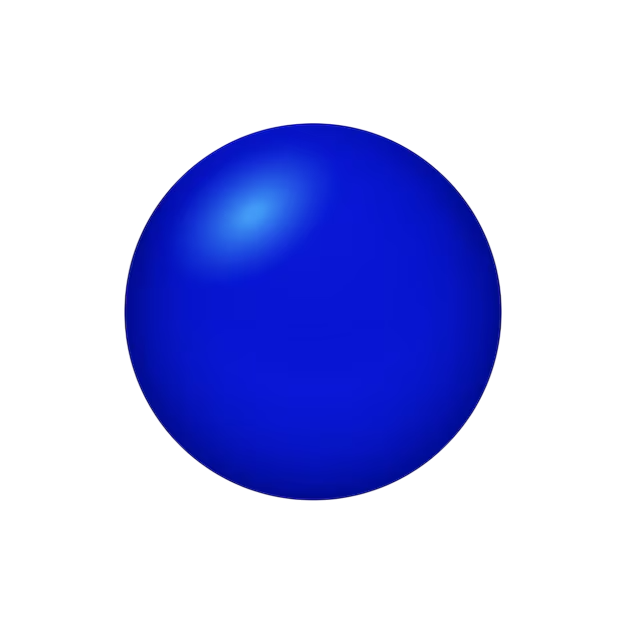
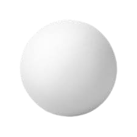

Terço Católico
Mistérios Gloriosos
Mistérios Gozosos
Mistérios Luminosos
Mistérios Dolorosos

Faça o 'Sinal da Cruz' e reze o 'Creio'

Reze o 'Pai Nosso'

Reze a 'Ave Maria' (1ª de 3)
Reze a 'Ave Maria' (2ª de 3)
Reze a 'Ave Maria' (3ª de 3)
Reze o 'Glória ao Pai'